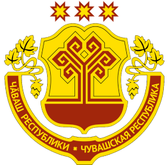

Город Чебоксары
Официальный портал
Город Чебоксары
Официальный портал
Истрия города
Столица Чувашской Республики - город Чебоксары (чув. Шупашкар), расположенный на правом берегу Волги, имеет многовековую историю
Чебоксары – город с многовековой историей. В письменных источниках Чебоксары упоминаются с 1469 года, когда русские воины остановились здесь на своем пути в Казанское ханство.Однако как населенный пункт он существовал значительно раньше. По данным археологических раскопок, на его месте с рубежа XIII - XIV веков существовало болгаро-чувашское поселение.
С 1555 года, после добровольного вхождения чувашского края в состав Московского государства, здесь была заложена крепость для защиты южных рубежей страны и создан Чебоксарский уезд. К концу 17 века город утрачивает свои оборонительные функции – Чебоксары становятся известным торговым центром Поволжья.
В 1625 в Чебоксарах насчитывалось 458 военнослужащих; по данным 1646 г., на посаде проживал 661 человек мужского пола. В 1-й четверти XVIII века некоторые категории военнослужилых людей (стрельцы, казаки) были переведены в податные сословия. По результатам 1-й ревизии 1723 г. в Чебоксарах насчитывалось 1924 чел. податного населения (муж. пола); в 1879 проживало 4498 человек (2308 жен., 2190 муж.), в т.ч. 2450 мещан, 277 купцов, 146 дворян. С конца XVII - начала XVIII столетия Чебоксары считались известным торговым городом Поволжья, в 1781 году приобрели статус провинциального города Казанской губернии. В начале XIX века население его составляло пять с половиной тысяч жителей, а промышленность ограничивалась лесопилкой и несколькими маленькими заводами.

Связаться снами или сообщить новость
Отправьте свою новость в редакцию, расскажите о проблеме или подкиньте тему для публикации. Сюда же загружайте ваше видео и фото.
Написать в редакцию
КРУГЛОСУТОЧНЫЙ ТЕЛЕФОН СЛУЖБЫ НОВОСТЕЙ
8 (343) 379-49-95

Контактные данные для Роскомнадзора и государственных органов
Связаться с отделом продаж: 8 (343) 379-49-10, adv@iportal.ru
Публикации с пометкой «На правах рекламы», «Партнёрский проект», «Открытая трибуна»,
«Выборы-2020» и «Выборы-2021» оплачены рекламодателем. Редакция сайта не несет
ответственности за достоверность информации, содержащейся в рекламных объявлениях.